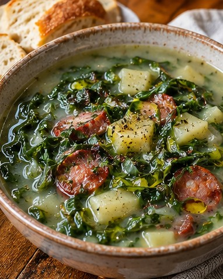

Portuguese · Dinner · Serves 6 · About 65 minutes (Instant Pot); 4–9 hours (slow cooker)
Portuguese-Style Caldo Verde with Collards and Smoked Kielbasa

Ingredient amounts are estimates when scaled. Original recipe and AnyList import remain unchanged.
Ingredients
- 1 lb smoked kielbasa, sliced (or Portuguese chouriço/linguiça)
- 2 lb Yukon Gold potatoes, peeled and diced
- 1 large yellow onion, diced
- 4 garlic cloves, minced
- 2 Tbsp extra-virgin olive oil
- 6 cups chicken broth or water
- 1 lb collard greens, stems removed, leaves very finely shredded
- 1–1½ tsp sweet paprika
- ¼ tsp smoked paprika (optional)
- Salt and black pepper, to taste
- 1–2 tsp red wine vinegar, to taste
- Extra-virgin olive oil, to finish (optional)
- Crusty bread, to serve
Instructions
Instant Pot · About 65 minutes
- Brown sliced kielbasa in olive oil; remove and reserve. Sauté onion in the flavored oil 4 minutes, then garlic 30 seconds. Stir in sweet paprika and optional smoked paprika for 20–30 seconds without burning.
- Add potatoes and broth, scrape bottom, and pressure-cook HIGH 8 minutes. Natural release 10 minutes, then release remaining pressure.
- Blend or mash potato broth until mostly smooth. Stir in finely shredded collards and sausage. Simmer on sauté 10–20 minutes or until greens are tender. Season, stir in 1 tsp red wine vinegar, taste, and add up to 1 tsp more if needed. Finish with olive oil.
- Serve with crusty bread. For soccer transport keep hot at 140°F or higher, or chill and reheat to 165°F.
Slow Cooker · About 4–9 hours
- Brown kielbasa in olive oil. Promptly refrigerate the reserved sausage in a shallow covered container while the soup cooks. Sauté onion 4 minutes and garlic 30 seconds, then briefly bloom the paprika before adding broth. Transfer onion mixture, potatoes and broth to the slow cooker. Cook LOW 6–7 hours or HIGH 3–4 hours until potatoes are tender. Blend or mash potatoes, then add greens. Cook a further 45–90 minutes on HIGH until greens are tender. Reheat the reserved kielbasa separately on the stovetop or in the microwave to 165°F, then stir it into the hot soup. Finish with red wine vinegar to taste and optional olive oil.
- Serve with crusty bread. For soccer transport keep hot at 140°F or higher, or chill and reheat to 165°F.
Notes
Handling reference: USDA reheating guidance. Refrigerate reserved sausage at 40°F or below within 2 hours (1 hour above 90°F).